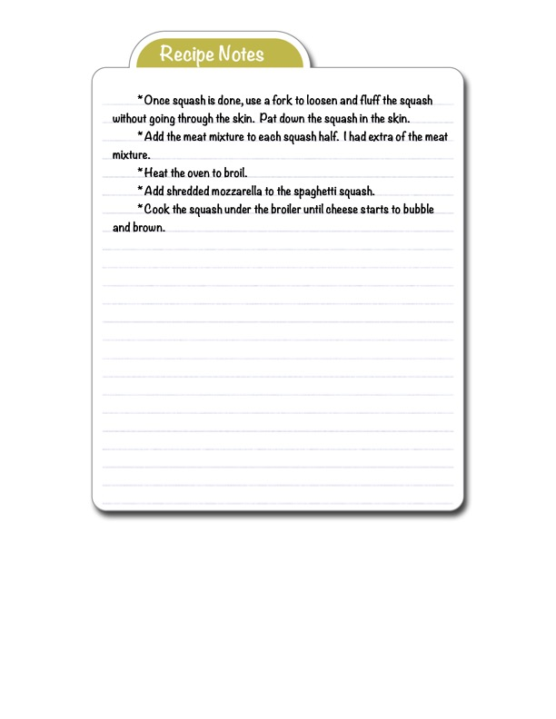

Spaghetti Squash with Meat and Mozzarella (Final Steps)

Original cookbook page 24
Continuation page showing final assembly and broiling steps for stuffed spaghetti squash with meat mixture and mozzarella cheese.
Ingredients
- Cooked spaghetti squash (halved)
- Meat mixture (from previous page)
- Shredded mozzarella cheese
Instructions
- Once squash is done, use a fork to loosen and fluff the squash without going through the skin. Pat down the squash in the skin.
- Add the meat mixture to each squash half. (Note: may have extra meat mixture)
- Heat the oven to broil.
- Add shredded mozzarella to the spaghetti squash.
- Cook the squash under the broiler until cheese starts to bubble and brown.
Recipe #24 from collection